¿Qué es?
Un workspace modular con una biblioteca reutilizable y una interfaz CLI para inspeccionar y procesar archivos localmente. Las funciones core documentadas no requieren APIs externas ni un servidor remoto.
Arquitectura

Flujo de ejecución

Requisitos
- Rust y Cargo 1.75 o superior.
- Git para clonar el repositorio.
- Linux, Windows y macOS en CI; Android/Termux sujeto a la toolchain disponible.
Instalación rápida
git clone https://github.com/AmilcarGit/AmilcarCore-RS.git
cd AmilcarCore-RS
sh scripts/install.sh
amilcar infoPara Termux y distribuciones Linux, consulta la guía completa.
Comandos implementados
Información del motor
amilcar infoInspección de metadatos
amilcar file inspect ./documento.txtComparación
amilcar file diff ./original.txt ./copia.txtBúsqueda recursiva
amilcar file find ./documentos --extension json
amilcar file find ./proyecto --name configDemostración

La salida de inspección cambia según los metadatos del archivo que ejecutes en tu dispositivo.
Operaciones de archivos
amilcar file copy ./origen.txt ./copia.txt
amilcar file copy ./origen.txt ./copia.txt --overwrite
amilcar file move ./copia.txt ./archivo.txt
amilcar file rename ./archivo.txt final.txt
amilcar file mkdir ./datos/nuevo
amilcar file remove ./archivo.txt
amilcar file rmdir ./datos/nuevo
amilcar file hash ./archivo.txt
amilcar file duplicates ./documentosLa copia no sobrescribe por defecto. rmdir solo elimina directorios vacíos; remove solo elimina archivos normales.
Estado del proyecto
Desarrollo temprano · Etapa 3. La base del workspace y las operaciones avanzadas del sistema de archivos están implementadas en esta etapa. El procesamiento ampliado de texto, JSON/CSV, benchmarks y validación completa de plataformas siguen en la hoja de ruta.
Licencia
MIT o Apache License 2.0, a elección del usuario. Consulta LICENSE-MIT y LICENSE-APACHE.